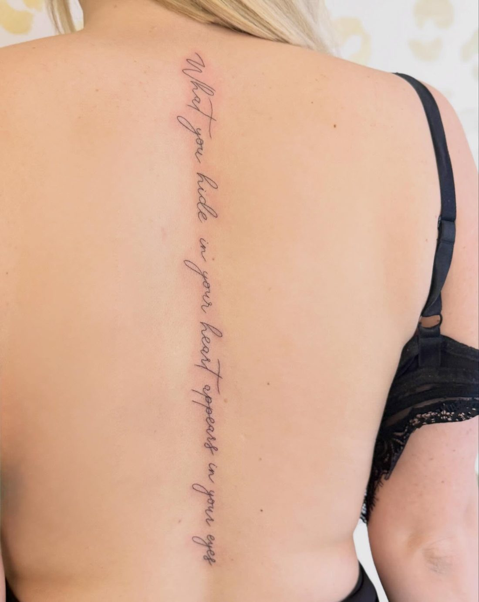
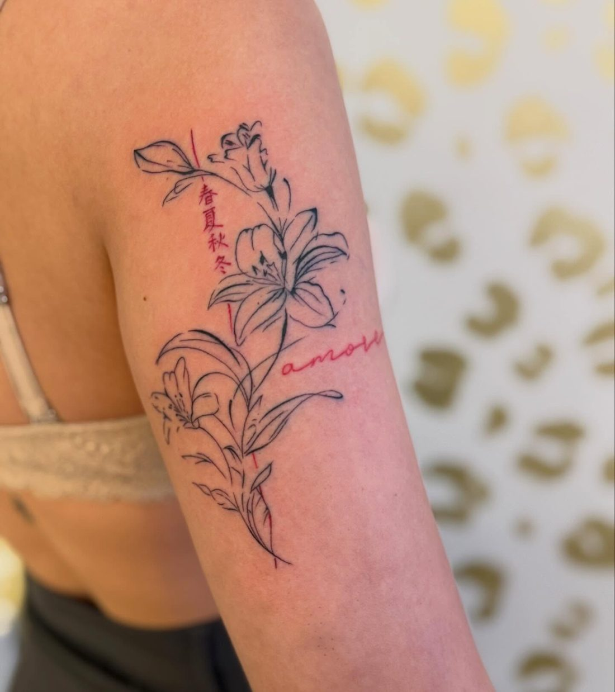
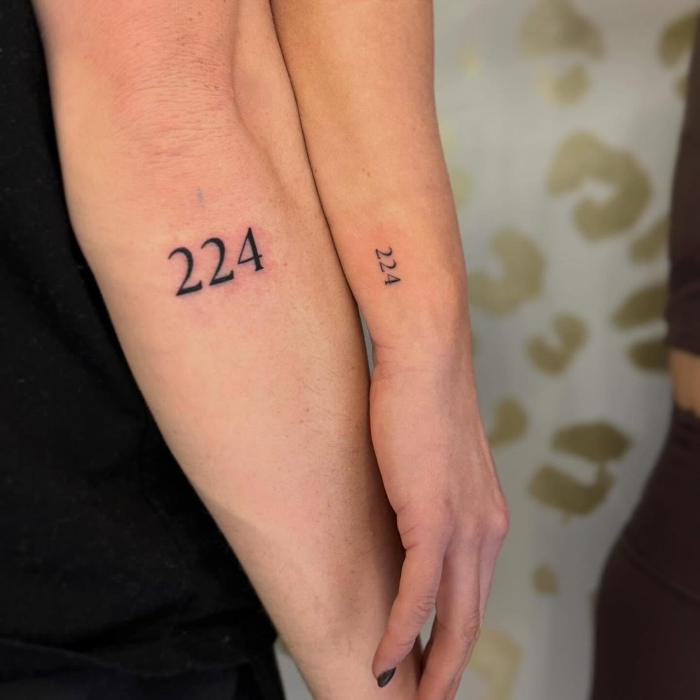

Laura Buekers Tattoo
Tattoos en wenkbrauwen in Wellen. Een catalogus van recent werk.
Afspraak maken01
- Werk
- Fox, bloemen en vlinders
- Plaats
- Arm
- Techniek
- Fine line, zwart-grijs

02
- Werk
- Boeket
- Plaats
- Arm
- Techniek
- Fine line

03
- Werk
- Vader en zoon
- Plaats
- Schouderblad
- Techniek
- Zwart-grijs

04
- Werk
- Lelie met rank
- Plaats
- Bovenarm
- Techniek
- Fine line

05
- Werk
- Maan met gezicht
- Plaats
- Bovenarm
- Techniek
- Fine line, dotwork

06
- Werk
- Infinity met bloemen
- Plaats
- Onderarm
- Techniek
- Fine line, lettering

07
- Werk
- Lelies
- Plaats
- Arm
- Techniek
- Fine line

08
- Werk
- Tekst langs de rug
- Plaats
- Rug
- Techniek
- Lettering
09
Klein werk
Namen, data en kleine tekens. Fijn en precies gezet.



Elk ontwerp wordt samen met jou uitgetekend.

10
- Werk
- Wenkbrauwen
- Plaats
- Gezicht
- Techniek
- Microblading en powder brows
Naast tattoos zet Laura ook wenkbrauwen. Dezelfde rust en precisie.

11
- Naam
- Laura Buekers
- Studio
- Bloemenstraat 22, Wellen
- Werk
- Tattoos, microblading, powder brows
“Vriendelijk, zorgzaam en professioneel.” Davy Daniels, Google review.
12
- Werk
- Wat klanten zeggen
- Bron
- Google reviews
5,0uit 0 reviews
“Voor mij heeft ze een heel bijzondere tattoo gezet: het voetafdrukje van ons zoontje. Zoiets persoonlijks vraagt om iemand die met zorg, precisie en respect werkt, en dat heeft ze meer dan bewezen.”
“Ze nam de tijd om mijn ideeën te bespreken en kwam met een ontwerp dat precies aansloot bij wat ik in gedachten had.”
“Al mijn tattoos zijn prachtig gezet met fijne, strakke lijnen. Mijn vingertattoos houden ook enorm goed, ondanks dat ik kapster ben en met de handen in het water zit.”
“Deze prachtige meid heeft mijn patchwork sleeve getatoeëerd, die trouwens nog niet af is, want ik blijf lege plekjes zien om op te vullen.”
“Echt een top tattoo artist! Super strakke lijnen, topdetails, alles samengevat: topwerk.”
Reviews afkomstig van Google.
13
- Werk
- Jouw ontwerp
- Plaats
- Jij kiest
- Techniek
- Samen uitgetekend
- Afspraak
- laurabuekerstattoo@gmail.com
- Studio
- Bloemenstraat 22, 3830 Wellen · Route plannen
© 2026 Laura Buekers Tattoo